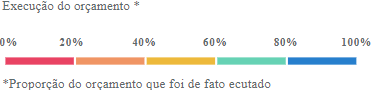
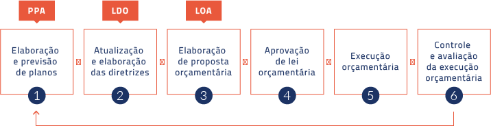

Sobre ❯ O Mosaico Orçamentário
A ferramenta permite visualizar o Orçamento da Secretaria Municipal de Educação de São Paulo a partir de dois recortes em termos da linguagem utilizada: Simplificada e Técnica
-
01. linguagem Simplificada - uso de categorias mais familiares para o cidadão comum
- Grupo
- ❯
- Subgrupo
- ❯
- Elementos de despesa
- ❯
- Subelementos de despesa
-
02. Linguagem Técnica - uso de categorias originais do orçamento segundo a classificação funcional/programática
- Subfunção
- ❯
- Programa
- ❯
- Projeto/Atividade
O último nível na linguagem simplificada o subelemento de despesa, descreve com o que especificamente a despesa está sendo efetuada.
O tamanho dos retângulos representa a proporção do orçamento (valor orçado atualizado) para aquela rubrica em relação às demais:
As cores dos retângulos representam a medida de execução do orçamento em questão. Isto é, o quanto do orçado atualizado foi, de fato, aplicado (o “empenhado”, já descontando eventuais cancelamentos de despesa):
Como o subelemento de despesa é uma categoria que só existe para os empenhos de despesa e não para o orçamento – conforme definido pela Lei Orçamentária (exemplo: não se autoriza verba para Material Hospitalar especificamente, mas sim para Materiais de Consumo, em geral) –, as cores associadas aos subelementos são “herdadas” da categoria maior, ou seja, do respectivo elemento de despesa
A ferramenta permite mostrar os dados de dois conjuntos de informação distintos: (i) o órgão orçamentário “Secretaria Municipal de Educação”; e (ii) a função orçamentária “Educação” ampliada, incluindo todas as despesas que são contabilizadas para o cumprimento do mínimo legal de gastos em ensino.
No segundo caso, a visualização é útil para mostrar quais despesas contam para o cumprimento de requisitos legais do município de São Paulo em termos de gastos com Educação. A Constituição Federal assegura, em seu artigo 212, no âmbito dos municípios, a aplicação de “vinte e cinco por cento, no mínimo, da receita resultante de impostos, compreendida a proveniente de transferências, na manutenção e desenvolvimento do ensino”.
Além disso, a Lei Orgânica Municipal de São Paulo assegura um percentual adicional de seis por cento, totalizando, portanto, trinta e um por cento como limite mínimo de gastos para manutenção e desenvolvimento do ensino. Parte dessas despesas contabilizadas não estão, no entanto, atreladas à função Educação e não são necessariamente executadas pela SME, por isso trata-se de um universo distinto de informações.
Sobre ❯ O Ciclo Orçamentário
O ciclo orçamentário é o processo pelo qual o orçamento público é planejado e formulado. Ele é composto por três peças principais:
- O Plano Plurianual (PPA);
- A Lei de Diretrizes Orçamentárias (LDO); e
- A Lei Orçamentária Anual (LOA)
O ciclo tem início a cada primeiro ano de mandato do chefe do executivo, quando é elaborado o PPA, instrumento que faz o planejamento estratégico para os quatro anos posteriores. A LDO indica as prioridades e as metas do orçamento anual, considerando os cenários macroeconômico e fiscal. A partir das diretrizes descritas pela LDO, ocorre finalmente a formulação e aprovação da LOA, que autoriza a quantidade de recursos destinados aos órgãos públicos em cada ano, segundo as classificações pertinentes às despesas e detalhadas as fontes da receita.
Por meio destas três leis o orçamento é proposto, aprovado, executado e avaliado continuamente.
Sobre ❯ O Processo de Execução
Definidos os valores destinados às rubricas, cabe aos órgãos responsáveis a execução do orçamento previsto. Nem sempre há execução total do valor orçado. Quando ocorre sobra de recursos, os valores ao final do exercício não acumulam para o ano seguinte, eles são estornados e devem ser redistribuídos segundo a LOA do ano seguinte.
Se durante o exercício forem necessários mais recursos, o orçamento público pode sofrer alterações. O recurso para determinada conta pode ser ampliado por meio de crédito suplementar, crédito especial ou por decreto de abertura de crédito extraordinário. Desta forma, o chamado “valor orçado atualizado” pode variar ao longo do ano.
As despesas passam por algumas fases antes de serem efetivamente realizadas. A partir da dotação autorizada pela LOA, os recursos destinados a determinado fim devem ser empenhados. Empenhar significa reservar aquele valor para cobrir o pagamento de algum bem ou serviço compatível com os fins estabelecidos pela rubrica na qual se inclui. Apenas depois que o serviço foi concluído ou bem adquirido foi entregue, o valor é liquidado. O pagamento daquela despesa é então realizado, fase em que a administração pública efetivamente quita seu débito com o credor.
Como esclarecido anteriormente, recursos não pagos em um período não acumulam para o ano seguinte. No entanto, se houver valores já empenhados, isto é, comprometidos a algum pagamento, porém não liquidados (os chamados “restos a pagar não processados”) ou pagos (“restos a pagar processados”) até a data de 31 de dezembro daquele ano, os valores são mantidos e inscritos em Restos a Pagar, de forma a transferir o recurso para o exercício posterior. Além disso, recursos empenhados podem ser cancelados, por isso utiliza-se o “empenhado líquido” (que já considera eventuais cancelamentos) como referência para execução.
Sobre ❯ As Classificações
As classificações orçamentárias são úteis para formular, apresentar, executar e controlar o orçamento em todo o ciclo orçamentário, garantindo um processo mais sistematizado e uniformizado e favorecendo a transparência.
As classificações devem facilitar a formulação de um orçamento que esteja em consonância com os objetivos das políticas, além de refletir com precisão o que o governo se propõe a fazer com os recursos disponíveis e proporcionar uma estrutura de controle administrativo para monitoramento do orçamento aprovado pelo Legislativo.
Existem várias classificações possíveis, segundo quatro lógicas distintas:
01. Istitucional
Evidencia as unidades administrativas responsáveis pela execução da despesa. Exemplo: (Órgão - Unidade Orçamentária) ⇔ (Secretaria de Educação - Gabinete do Secretário).
02. funcional
Fornece as bases para a apresentação de dados sobre os gastos públicos nos principais segmentos em que atuam as organizações do Estado. Exemplo: (Função - Subfunção) ⇔ (Educação - Educação Infantil).
03. segundo a natureza da despesa
Fornece indicações mais detalhadas sobre a destinação da despesa e como ela será aplicada. Exemplo: (Grupo de Natureza de Despesa - Elemento de Despesa) ⇔ (Investimentos - Obras e Instalações).
04. programática
Especifica os gastos até o nível de programa; sua finalidade é demonstrar as realizações do governo. Exemplo: (Programa - Projeto/Atividade) ⇔ (Desenvolvimento e Manutenção da Educação - Ações de Educação Integral).
Para o Mosaico, foram utilizados, na navegação por linguagem técnica, atributos das classificações funcional e programática. Já na linguagem simplificada, foi criada uma tipologia alternativa, para viabilizar o uso da ferramenta sem exigir conhecimento prévio sobre categorias orçamentárias. Além disso, essa navegação usa atributos da classificação segundo a natureza da despesa: o elemento e o subelemento de despesa. Essas categorias também tiveram sua nomenclatura original reformulada para uma linguagem mais acessível.
Essa tipologia alternativa é contemplada por áreas principais de gastos em Educação: os grupos e subgrupos. Grupos são categorias mais amplas que subgrupos. Por exemplo: uma despesa de pagamento de fornecedores de serviço de transporte escolar será categorizada no Subgrupo “Transporte Escolar”, que faz parte do Grupo “Apoio ao Aluno”.
A tipologia foi elaborada em conjunto entre a SME e a FGV/DAPP por meio da análise de outros atributos das despesas, em especial, o agrupamento das ações orçamentárias (Projeto/Atividade).